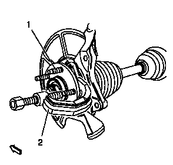
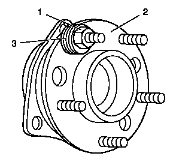

车轮双头螺栓的更换
专用工具
CH-43631
球节拆卸工具
当地同等工具：
专用工具
拆卸程序
1.
举升并妥善支撑车辆。
举升和顶起车辆
2.
前轮轮胎和车轮总成»拆下 –
轮胎和车轮的拆卸和安装
3.
将制动钳和托架作为一个总成拆下并支撑，然后拆下制动盘。
前制动盘的更换
4.
将轴承轮毂转动至双头螺栓和转向节之间的最小干扰位置。

告诫：
无论制动钳已从其支座上分离，还是仍连接着液压挠性制动软管，都要用粗钢丝或同等工具支撑住制动钳。若不这样支撑制动钳，会使挠性制动软管承受制动钳重量，导致制动软管损坏，从而可能使制动液泄漏。
5.
使用
CH-43631
拆卸工具
(2) 将车轮双头螺栓 (1) 从轴承轮毂上分离并报废双头螺栓 (1)。
安装程序

1.
将新的双头螺栓安装至轴承/轮毂总成 (2)。使用足够的垫圈 (3)，以便将双头螺栓拉入轮毂内。
2.
安装并紧固车轮螺母 (1)，直至车轮双头螺栓的端部完全顶住轴承轮毂法兰的背面 (2)。
3.
拆下车轮螺母 (1) 和垫圈 (3)。
4.
安装制动盘，并将制动钳和托架作为一个总成进行安装。
前制动盘的更换
5.
前轮轮胎和车轮总成»安装 –
轮胎和车轮的拆卸和安装
6.
降下车辆。